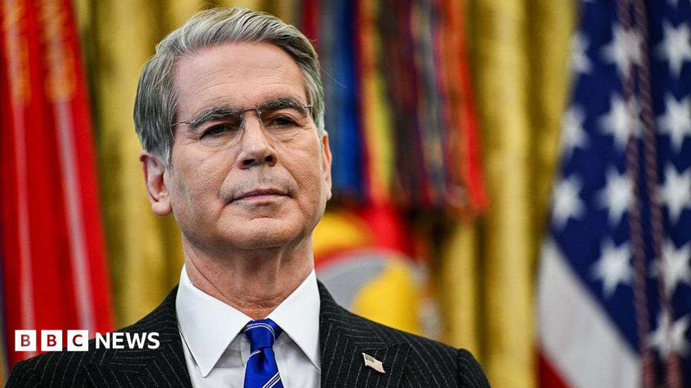

World · 14 Nov 2026
Nvidia scandal fallout widens as Trump's treasury secretary blames cabinet colleague

Scott Bessent suggests Howard Lutnick’s commerce department failed to ban exports of Nvidia's chips to a firm thought to have links with China.
Multiple independent publishers are reporting on the same development: Nvidia scandal fallout widens as Trump's treasury secretary blames cabinet colleague.
The available reports place the development in the World category. The accounts were compared for agreement on the central event rather than simply shared names or broad topics.
One of the available reports describes the development this way: Scott Bessent suggests Howard Lutnick’s commerce department failed to ban exports of Nvidia's chips to a firm thought to have links with China.
Readers should consult the linked source reports for additional context, updates and details that may change as the story develops.
Sources
This article was produced by the C. O. Eric AI Newsroom from the cited sources. It is published only after automated evidence and safety checks.